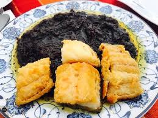

deuxième ville et centre économique de Tunisie,est une ville portuaire de l'est du pays située à environ 270 kilomètres de Tunis
Riche de ses industries et de son port, la ville joue un rôle économique de premier plan avec l'exportation de l'huile d'olive
et du poisson frais ou congelé. Sfax est une cité d'affaire compte certains sites à vocation touristique,tels que la médina, Thyna
et ses salines, malgré la longue présence des usines de traitement du phosphate.
les traditions sfaxiennes
charmoula
Charmoula (ou Chermoula), est une sauce sucrée qui accompagne le poisson salé servi lors du premier repas de l’Aïd el Fitr.
charmoula n’est préparée que dans la région sfaxienne.

marriage
La dernière soirée du mariage se déroule chez la famille du marié, marquée par une cérémonie appelée Fahej 3al hout à Sfax.
La mariée revêt une robe couleur argent, richement brodée à la main, et participe à un rituel unique Les mariés doivent sauter chacun
sept fois par-dessus un poisson, le « Mérou », pour chasser le mauvais œil. Cette tradition ancestrale illustre la croyance en la
protection et la prospérité pour le couple nouvellement formé.
couscous au poisson
Le couscous au poisson est un couscous traditionnel de la région de Sfax en Tunisie. Il est servi avec des tranches de poisson